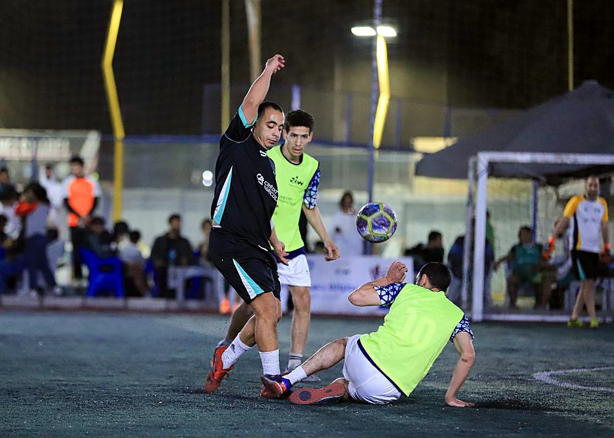

نعمل في أنحاء مصر على دمج وتمكين أبناء وخريجي دور الرعاية، برؤية يقودها أصحاب القضية بأنفسهم. نبتكر مسارات حقيقية للاستقلال عبر مبادرة «جسور» وبرامجنا التنموية، المتوَّجة بجائزة الشارقة للاتصال الحكومي 2026.


من أرقام بصمة نور قبل التأسيس الرسمي وبعده، وهي بعض ما أنجزناه على سبيل المثال لا الحصر
رسالتنا نقل شباب وفتيات دور الرعاية إلى الاستقلال والمشاركة الفاعلة في المجتمع.
اكتشاف المواهب وبناء مسارات احترافية وتطوير القدرات عبر بطولة جسور، ومنتخب جسور، ودعم الألعاب الفردية.
مسار متخصص لخريجات دور الرعاية ودعم حضورهن في الرياضة والمحافل المعنية بالحماية.
توظيف وتأهيل مهني، قروض حسنة للمشروعات الصغيرة، وتجهيزات معيشية تدعم الاستقلال، والخدمات الأساسية المعيشية.
دعم نفسي وقانوني واجتماعي، حل أزمات الأوراق، قوافل طبية، ودعم أسري.
مرصد بصمة نور، حضور فني ودرامي إيجابي، وحملات توعية في المدارس والجامعات والإعلام.
تحويل الشباب إلى سفراء وممثلين بالمحافظات لنقل نبض الشارع والتأهل للقيادة، لتمثيل قضيتهم في المحافل والمؤتمرات وتوصيل صوت الشباب.
بطولة كرة قدم بنظام الفرق المدمجة 50/50: نصف كل فريق من شباب دور الرعاية ونصفه من موظفي الشركات. علاقة ندّية وتكافؤ فرص بدل الشفقة.

فاز نور شعبان بالجائزة عن فئة أفضل مبادرة شبابية في الاتصال، بإشراف المكتب الإعلامي لحكومة الشارقة، وكرّمته الدكتورة مايا مرسي، وزيرة التضامن الاجتماعي.


جمعية بصمة نور ضيفة برنامج «مساء جديد» للحديث عن أهدافها وبرامج الدعم النفسي والخدمات المجتمعية.
7 محافظات، 16 فريقاً في بطولة الرجال و8 فرق في بطولة السيدات، ومنتخب جسور للناشئين تحت 17 سنة.
نرحب برعاية بطولة جسور الرمضانية 2027 ودعم وفد مصر إلى وارسو. نرسل لكم تفاصيل باقات الرعاية عند التواصل.